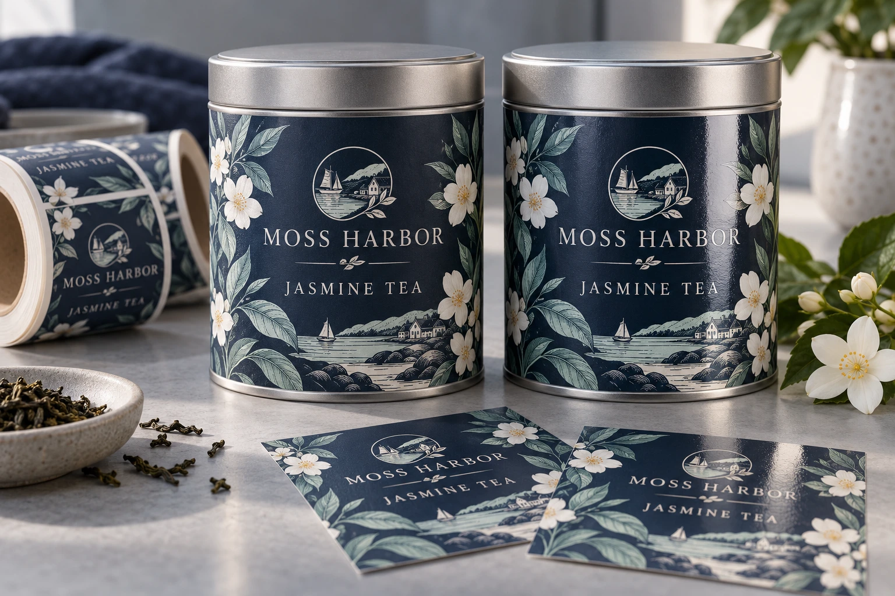

Two quotes both say protective finish. One proposes an added film laminate; the other proposes a coating. A matching matte or gloss description does not establish that the finished constructions or their limits are equivalent.
Name the protective layer, its coverage and the job it must do before comparing the offers. This article adds a finished-surface scope sheet; it does not rank every laminate above every varnish or promise waterproof performance from a top layer.

AI-generated packaging planning example. Moss Harbor is fictional; this is not a customer job, security proof or measured test.
Identify the proposed finished construction
Ask the converter whether the proposal uses an added laminate film, a coating/varnish or another specified arrangement. Keep the face material, adhesive and intended package in the same record. A surface description alone cannot establish the package bond or exposed-edge behavior.
| Scope field | Question for the actual proposal |
|---|---|
| Protective layer | What type and identified construction is proposed? |
| Coverage | Which areas are covered, excluded or reserved for later operations? |
| Intended job | Appearance, rubbing protection, handling resistance or another defined need? |
| Exposed boundaries | What remains at cut edges, openings or unprotected zones? |
| Later process | Will coding, decoration or another operation touch this surface? |
| Evidence | Which sample and agreed observation represent the final construction? |
Use the same intended conditions for comparison. A sample of one finish on a different face stock is not an isolated finish comparison. If several construction elements change together, name them rather than attributing the result to lamination alone.
Separate shelf appearance from protection
Matte and gloss describe an appearance direction, not a complete protection rating. Review critical colors, glare, dark areas and tactile expectations on identified physical samples. A flattering photograph does not show all viewing angles or later wear.
For protection, state the actual exposure that matters. Rubbing in a carton, wet handling and contact with a product spill are different conditions. Ask which evidence is relevant to the proposed system. No specific resistance time, rub count or chemical compatibility is established here.
Preserve the function of deliberately uncovered areas
A later coding zone may need a surface compatible with the intended marking method. A decorative area may involve another finishing process. Record these zones with the artwork revision and have the converter confirm feasibility before the quote is accepted.
Use the later overprinting guide for printer/ribbon trials. This scope sheet identifies the interface; it does not prescribe the coding settings or assume that all laminates prevent printing.
Compare alternatives on useful evidence
If a coating meets the defined appearance and handling need on the actual construction, a laminate is not automatically a necessary upgrade. If a proposed coating lacks relevant evidence, its simpler-sounding scope is not enough to establish suitability either. Ask what is included in the offered sample and acceptance plan.
The rub-report comparison keeps scuff evidence comparable, while the waterproof sample-coverage sheet identifies wet-use gaps. The finish appearance guide covers the separate visual tradeoff. Keep all three tied to the same final construction.
Short answer
Consider an identified laminate when the label needs additional surface protection, a more consistent finish or better resistance to handling. For dry indoor packaging, unlaminated paper may be enough. For chilled drinks, oily sauces, ice buckets, wet hands or frequent shipping friction, a proposed laminate or coating needs evidence for the actual construction.
When lamination is worth adding
Lamination helps when labels may be rubbed, chilled, handled by wet hands, packed in cartons, placed near oil or used on curved bottles. It can also make black, dark or premium designs feel more finished because the surface becomes more controlled.
- Juice, soda, tea, coffee and chilled drink bottles with condensation.
- Sauce, dressing, honey and oil-adjacent food packaging.
- Wine, spirits and gift packaging that needs a premium hand feel.
- Roll labels that may be handled during machine application.
Matte vs gloss lamination
| Finish | Best for | Watch out for |
|---|---|---|
| Matte lamination | Premium food, wine, natural brands, muted packaging. | Can soften very bright colors and may show rub marks on dark designs. |
| Gloss lamination | Juice, snacks, sauces and colorful retail labels. | Reflective surface can create glare under strong shelf lighting. |
| Soft-touch style | Gift packaging and premium bottle labels. | Needs careful handling tests for scuff-prone shipping. |
| No lamination | Dry paper labels, short-run tests, indoor jars and boxes. | Less surface protection against moisture, oil and friction. |
Lamination does not replace material selection
Many buyers ask for a waterproof finish when the real issue is the whole label construction. A beverage label for condensation usually needs a suitable film material such as BOPP or PET, an adhesive chosen for the surface, and a finish that protects the print. A dry bakery box may only need paper with a clean print finish.
Questions to answer before quoting
| Field | Requirement to confirm |
|---|---|
| Storage | Room temperature, refrigerated, frozen, wet cooler or ice bucket. |
| Surface | Glass, PET bottle, paper box, pouch, jar lid or curved container. |
| Handling | Hand applied, dispenser, machine application, shipping or retail handling. |
| Design style | Bright color, dark label, metallic accent, natural paper look or clear film effect. |
Related guides
For finish comparison, read matte vs gloss labels. For wet packaging, review waterproof beverage labels. If the label will be applied by machine, check label roll direction before production.
Send the relevant project details
Discuss the protective finish scope with package photos, label construction, quantity, intended handling and marked coverage/coding zones. Explain the surface problem you need to resolve. The form opens an email draft; use listed email or WhatsApp for files. Ask which laminate/coating options and sample evidence are actually available before choosing a specification.